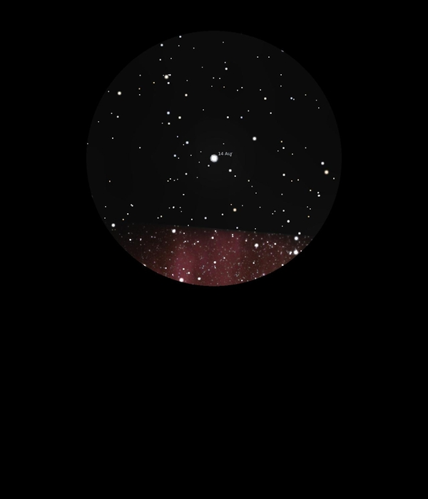

14 Auriga
Double Star in Auriga
Mags 5.00, 7.85 and 11.70
KW
Aur, HIP 24504
04/12/16
A nice double with quite a magnitude difference but wide
separation
The primary is Mag 5.0 with one of it's components at 7.85,
both yellow white and of similar colours and the other at Mag
11.70 just glimpsed when zoomed in to 8mm